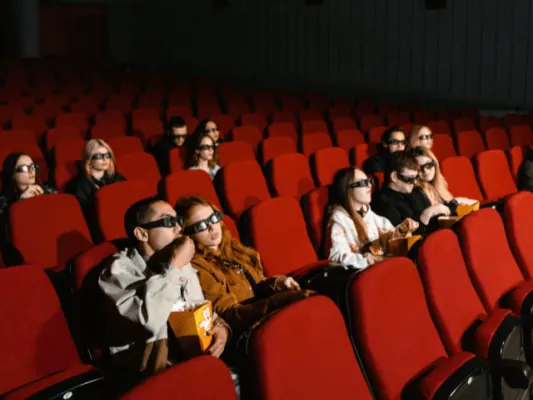
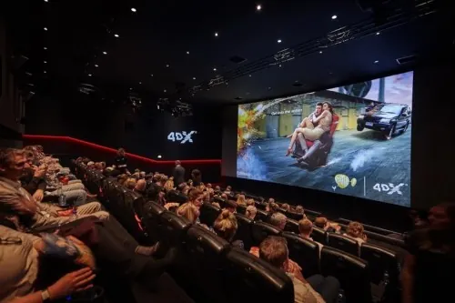
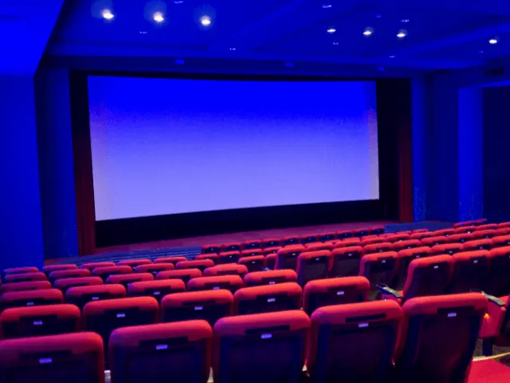

Bioscoop in Nijmegen: Pathé, Vue en LUX
Gepubliceerd op 15 december 2022, bijgewerkt op 25 november 2026
Onderdeel van de gids Musea in Nijmegen

Nijmegen heeft drie bioscopen: Vue en het filmhuis LUX in het centrum, en Pathé in Lent, aan de overkant van de Waal. Hier lees je wat elke bioscoop biedt, hoe je er komt en waar je voor of na de film eet.
Pathé Nijmegen: de bioscoop in Lent
Aan de Willem van Arenbergstraat, bij de Lentse Plas in Nijmegen-Noord, zit Pathé Nijmegen. Wie op zoek is naar een bioscoop in Lent, komt hier uit. Ga je voor extra spektakel, kies dan een 4DX-voorstelling, waarbij de stoel beweegt en allerlei effecten je midden in de actie zetten. Er zijn ook zalen met Dolby Atmos. Vanaf Nijmegen Centraal fiets je er in zo'n tien minuten over de fietssnelweg, de bus stopt bij P+R Waalsprinter en met de auto parkeer je bij Parking You Lentse Plas. Alle zalen zijn met een lift bereikbaar.
Eten voor of na de film? Naast de bioscoop zit Moeke, een grand café aan het water van de Lentse Plas.
Vue Nijmegen: bioscoop in het centrum
Aan de Tweede Walstraat, midden in de binnenstad, heeft Vue Nijmegen acht moderne zalen met de nieuwste films en af en toe een speciaal event. In elke zaal zit je in een ruime stoel met voetensteun en een eigen tafeltje, met laserprojectie, 3D en Dolby Atmos. In de foyer en de Preview Bar haal je voor de film nog een drankje of verse popcorn. Alle zalen zijn met een rolstoel bereikbaar.
LUX: filmhuis aan de Mariënburg
Zin in een film die je niet in elke bioscoop ziet? LUX aan de Mariënburg draait arthouse en nieuwe premières, maar ook klassiekers. Er is meer dan film: dansvoorstellingen, debatten en programma's met de Radboud Universiteit, en in de herfstvakantie het Cinekid Festival voor kinderen. In het café-restaurant eet of drink je voor of na de film. Met een Cinevillepas ga je onbeperkt naar de film in LUX en andere filmhuizen.

Film en eten combineren
In het centrum liggen Vue en LUX vlak bij de restaurants rond de Mariënburg en Plein 1944. Humphrey's zit aan de Mariënburg in het oude filmhuis, en eetcafé De Dromaai aan Plein 1944 serveert al sinds 2003 huisgemaakte maaltijden. Vraag bij het restaurant of de bioscoop of er een arrangement met eten en film is. Meer ideeën lees je in onze gids restaurants in Nijmegen.
Meer cultuur in Nijmegen
Liever theater of een concert? Kijk in onze gids film, theater en concerten in Nijmegen of in de agenda.

Veelgestelde vragen
Hoeveel bioscopen heeft Nijmegen?
Nijmegen heeft drie bioscopen: Pathé Nijmegen in Lent, Vue aan de Tweede Walstraat in het centrum en het filmhuis LUX aan de Mariënburg.
Is er een bioscoop in Lent?
Ja, Pathé Nijmegen zit in Lent, aan de Willem van Arenbergstraat bij de Lentse Plas. Vanaf Nijmegen Centraal fiets je er in zo'n tien minuten heen.
Welke bioscoop in Nijmegen heeft 4DX?
Pathé Nijmegen in Lent heeft 4DX-voorstellingen en zalen met Dolby Atmos.
Welke bioscoop zit in het centrum van Nijmegen?
Vue aan de Tweede Walstraat en LUX aan de Mariënburg. LUX draait vooral arthouse, Vue de nieuwste films.